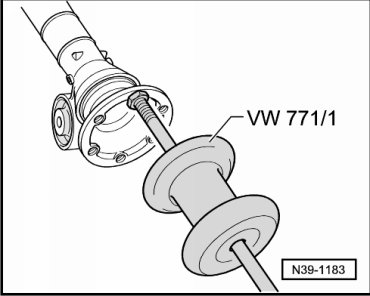
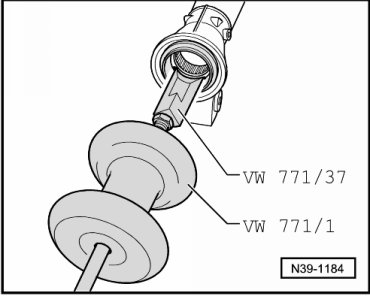
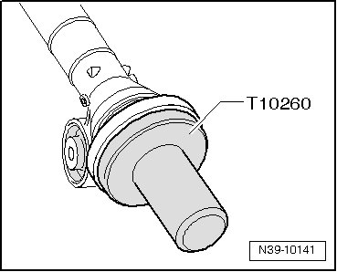
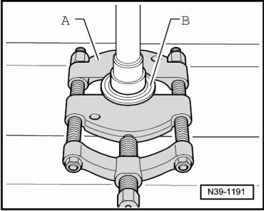
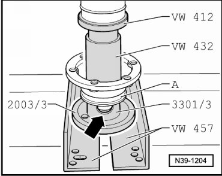

Left Flange Shaft Seal
Left Flange Shaft Seal
Special tools, testers and auxiliary items required
• Punch (VW 412)
• Thrust piece (VW 432)
• Support channels (VW 457)
• Slide hammer (VW 771)
• Seal installer (2003/3)
• Alignment fixture (3301)
• Sealing grease (G 052 128 A1)
• Kukko 17/2 separating device
• Thrust piece (T10260)
Removing
- Remove front final drive. Refer to --> [ Front Final Drive ] Front Final Drive.
- Secure slide hammer (VW 771) to left flange shaft.

- Pull out left flange shaft.
- Pull out sealing ring for flange shaft using slide hammer-complete set (VW 771) and additional part for VW771 (771/37).

Installing
- Drive in new seal until seated.

- Fill area between sealing lip and dust lip halfway with sealing grease (G 052 128 A1).
Before installing the flange shaft, check the dust cap for damage. Replace the dust cap if necessary.
- Remove old circlip - A - from groove in flange shaft using pliers.

B Protective jaws
- Insert new circlip in groove of flange shaft, being careful not to overstretch circlip.
- Drive in flange shaft using a plastic head hammer.
- Install front final drive. Refer to --> [ Front Final Drive ] Front Final Drive.
- Check gear oil in front final drive. Refer to --> [ Gear Oil Checking ] Gear Oil Checking.
Dust Cap for Flange Shaft, Replacing
- Press off dust cap - B - from flange shaft.

A Separating device 22 to 115 mm, e.g. Kukko 17/2
- Press dust cap - A - onto flange shaft.

Set the sleeve (3301/3) in place with the recess - arrow - facing toward the dust cap - A -.